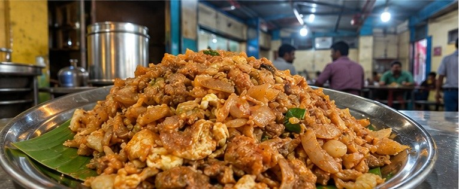
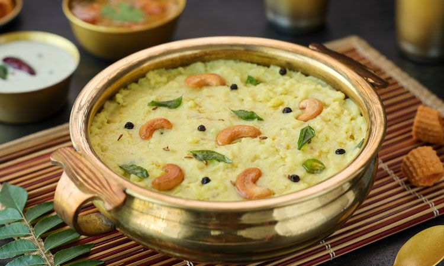

01of 08
Kongunadu Biryani
கொங்குநாடு பிரியாணி
A mild, pale biryani: vellai means white. It is made with short-grain seeraga samba rice and chicken or mutton, with far fewer spices than most biryanis.
Eight dishes Kovai is known for, and where people go to eat them. Places are named in published food guides. Branches and timings change, so check before you go.
கொங்குநாடு பிரியாணி
A mild, pale biryani: vellai means white. It is made with short-grain seeraga samba rice and chicken or mutton, with far fewer spices than most biryanis.

அரிசி பருப்பு சாதம்
A one-pot meal of rice and toor dal tempered with onion, mustard seeds and garlic. It is usually eaten with pickle, rasam, curd and papad.
Our tipAlso on the menu at most Kongu-style messes in the city.
Named in: Swiggy: famous food in Coimbatore

பள்ளிபாளையம் சிக்கன்
Unmarinated chicken fried in very little oil with shallots, coconut and chillies. It is named after the town of Pallipalayam, near Erode.

நெய் ரோஸ்ட் தோசை
A paper-thin, crisp dosa finished with ghee and often folded into a cone. It is served with coconut chutney, sambar and coriander chutney.

பணியாரம்
Dumplings of rice and lentil batter, crisp outside and soft inside. They are eaten at breakfast or with tea, usually with chutneys.
Our tipEvening street-food stretches like Thirupathi Nagar and Eachanari are good bets too.
Named in: Swiggy: famous food in Coimbatore

இளநீர் பாயசம்
A cool, creamy dessert made with tender coconut.
Named in: Tripadvisor review · Justdial listing

கொத்து பரோட்டா
Shredded parotta chopped and tossed on a hot tawa with salna, made with egg or meat or as a vegetable version.
Our tipMost evening parotta stalls in the city make it to order.

மல்லி பொங்கல்
A soft, comforting breakfast of rice and moong dal.
Our tipPongal is a breakfast staple at most vegetarian hotels in Kovai.
More dishes are being added.
← Back to home